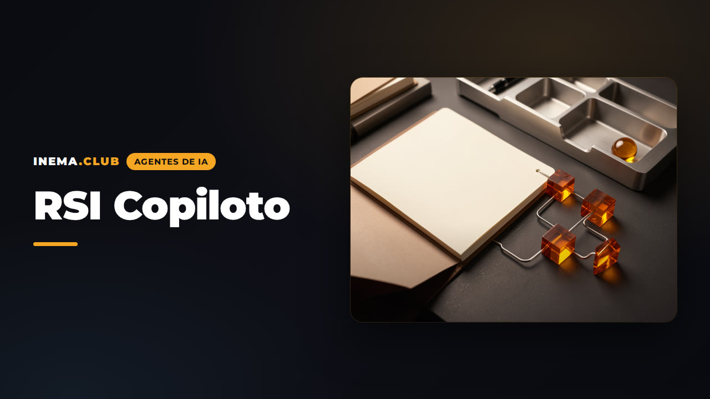
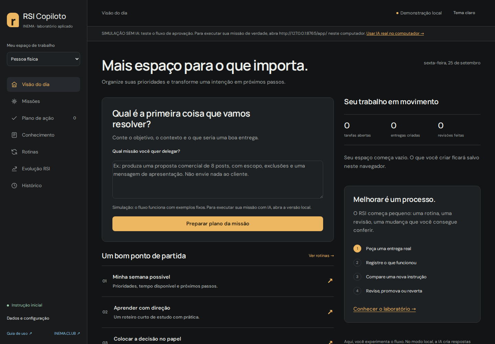

Organize your routine, prepare deliverables, and test improvements to your own copilot. For personal life, independent work, and small businesses.
Public demo with scripted examples. Real AI in the local version. The app interface is in Portuguese.

RSI Copiloto is a single-user system inspired by the idea of Jarvis and Hermes: it gathers context, prepares work, and tracks improvements. The cycle improves instructions and processes; it does not retrain the model.
Weekly planning, studying, and organizing decisions. Separate what you know from what you still need to find out.
Proposals, follow-ups, and delivery checklists. Record preferences and terms to reuse context.
Customer service drafts, meetings turned into actions, and procedures for recurring work.
The work does not end with the response. Record what needed correcting, propose an instruction change, and compare before adopting it.
AI produces structured text. Turning next steps into tasks, saving a deliverable as memory, and promoting a version are explicit operator actions.
You define the mission. The AI proposes one to five steps. Review the plan and click “Aprovar plano e executar primeira etapa” (approve the plan and run the first step). The result appears inside the mission for your review.
Click “Aprovar e executar próxima etapa” (approve and run the next step) to continue using the approved result and your feedback. “Corrigir esta etapa” revises the current work. You can pause, reload and resume. Saving to memory is optional: mission history is already preserved.
A step requiring sending, external research, code execution or another integration is shown as a manual action. The system states that it has not performed it and waits for you to record the actual result before continuing.
After completion, view your average rating and revision count. Click “Iniciar LOOP-R desta missão” (start this mission’s LOOP-R). The AI receives this evidence, critiques failures and proposes a candidate instruction. In the lab, compare both versions, read the answers, record your assessment and only then promote.
New missions use the promoted instruction. Missions already started retain their original version. This is supervised improvement of instructions and procedures, without training model weights. The three general tests check structure; they do not prove better quality or financial results.
The public demo uses programmed examples. The full workflow operates; use the local version to generate actual mission content with AI.
The public app lets you try the workflow. The local version adds real AI, SQLite, and daily routine execution while the server is running.
No account or key required. Data stays in your browser; responses follow a clearly identified fixed script. Clearing storage deletes your data. Export a backup to keep it.
Python 3.11 or later, Git, and an OpenRouter credential. No additional Python libraries. The server only accepts connections from this computer.
git clone https://github.com/inematds/rsi-copiloto.git cd rsi-copiloto python3 -m rsi.server
Load the key at runtime: OPENROUTER_API_KEY in the environment, or RSI_ENV_FILE pointing to an existing file outside the repository. The server also checks ~/projetos/openpcbotv2/.env and ~/projetos/wifi/.env. Never put the key in the public app.
RSI_ENV_FILE="$HOME/.config/minhas-credenciais.env" python3 -m rsi.server # The specified file must contain OPENROUTER_API_KEY. # To adjust the model and daily limit: RSI_MODEL=openai/gpt-5.4-nano RSI_DAILY_CALLS=30 python3 -m rsi.server
Default model: openai/gpt-5.4-nano via OpenRouter. Up to 2,400 output tokens per call. Default limit: 50 attempts per UTC day, including failures. This limits calls, not spending. The dashboard displays tokens and cost when reported by the provider.
Start with a small request you know how to review. These steps work in both the demo and the local version.
Select Individual (Pessoa física), Independent professional (Profissional independente), or Small business (Pequena empresa). Each workspace has its own tasks, deliverables, and memories. The active instruction is shared across all three.
Under Knowledge (Conhecimento), record a policy, preference, or procedure. Example: “Our proposal includes two revision rounds; pricing depends on scope approval.” Check Share (Compartilhar) only if it applies to all three workspaces.
Use one of the nine routines or write your own request. The AI version retrieves up to five memories through word matching, without sending the entire history.
Prepare a proposal for 8 posts for a shop. We have 10 business days after receiving the materials. Pricing is still undefined. Use our revision policy. I need scope, deliverables, terms, and next steps.
Check the deliverable, gaps, and cited memories. Copy or download the text. The system prepares drafts: it does not send messages or make commitments to clients.
Click Add next steps to tasks (Adicionar próximos passos às tarefas). Add deadlines to new manual tasks and export dated open tasks to an .ics file. Exporting does not automatically sync your calendar.
Rate the result from 1 to 5 and describe an observable correction: “it should have asked about the deadline before suggesting a date.” This review becomes part of the next improvement request.
Under RSI Evolution (Evolução RSI), describe what you want to improve. AI proposes a candidate instruction using the current version and up to eight recent reviews from the selected workspace. Evaluation examples are not included in that call.
Comparison makes six calls: current and candidate instructions on the same three cases, without real memories. Responses and the structural scoring criteria are visible. The demo uses fixed examples; it does not measure actual gains.
The candidate must pass without structural regression. You read the cases, record your assessment, and confirm promotion. The change applies to all three workspaces. Previous versions can be restored.
The scoring criteria check text length, next steps, and explicit gaps. They do not measure truth, usefulness, customer satisfaction, or financial results. Three fixed examples are an initial test, subject to overfitting, not statistical proof of improvement. An equal score does not demonstrate progress.
These are usage scenarios, not proven customer outcomes.

Read the RSI research (in Portuguese) → · Implementation plan (in Portuguese) →
python3 -m unittest discover -s tests -v # Optional real AI test: up to 8 paid calls with fictional data. python3 -m scripts.smoke_live
Integration contract checked against the official OpenRouter documentation. Model and pricing checked in the official catalog on September 25, 2026. The app records the reported cost per call without promising a fixed price.